Our chapter contributes to Live Like Lou through various projects and philanthropic events, some of which are collaborative with other organizations on campus. This past November, our brothers participated in a 2 day long "Fire and Ice" event. Inspired by the "ALS Ice Bucket Challenge", our brothers were soaked in buckets of ice water and drank hot sauce for Live Like Lou!
This past spring, our chapter hosted another pottery sale in collaboration with the Clay Club on campus! Brothers worked with members of the Clay Club over the past semester to make mugs, bowls and more by hand. These pieces were sold and the proceeds were split between Live Like Lou and the local Meadville Soup Kitchen.
Outside of the contributions to Live Like Lou, our chapter works to better our larger Meadville Community. Our chapter has frequently worked with Tamarack Wildlife Center to help clean and upkeep their facilities. We contribute to annual service events hosted by the College and actively participate and contribute to other organization's philanthropic endeavors to advance their causes as well.
This Fall, PA Delta is undertaking the formidable task of becoming an "Iron Phi Chapter", raising a total of $10,000 for LiveLikeLou in addition to each participating brother planning and executing a physical challenge of their choosing.
According to their website, the Iron Phi program is described as: "...a way to strengthen both Phi Delta Theta and its impact on the fight against Lou Gehrig's disease. Through the fundraising efforts of participants on the way to achieving personal athletic goals, Iron Phi is creating a community of philanthropists who hope to Leave ALS Better Than They Found It.
To become an Iron Phi, participants must select an athletic endeavor of their choice, raise $1,000 through the Iron Phi website, and accomplish the athletic endeavor itself."
Anyone is able to take on the Iron Phi Challenge: undergraduates, alumni, friends of the chapter or just ALS advocates! You can find out more at the link here.
Feel free to follow us on our Instagram to see brothers on their journeys as we aim to raise $10,000 collectively for ALS research, solidifying PA Delta as an "Iron Phi Chapter"!